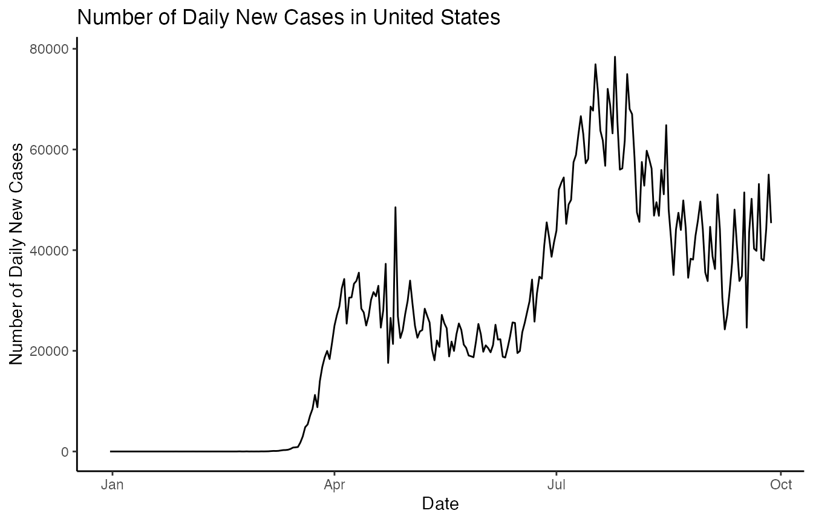

covid.RmdThe COVID19dashboard package used to provide interactive visualisation of the COVID-19 pandemic dataset by using the shiny dashboard. The COVID-19 data contains the data over 210 countries since 31 Dec 2019. The COVID-19 data sourced from Our World in Data.
The package and part of the data can be accessed via:
library(COVID19dashboard) #> Loading required package: shiny #> Loading required package: tibble #> Loading required package: shinydashboard #> #> Attaching package: 'shinydashboard' #> The following object is masked from 'package:graphics': #> #> box #> Loading required package: rnaturalearth library(tibble) covid_raw #> # A tibble: 46,484 x 41 #> iso_code continent location date total_cases new_cases new_cases_smoot… #> <chr> <chr> <chr> <date> <dbl> <dbl> <dbl> #> 1 AFG Asia Afghani… 2019-12-31 0 0 NA #> 2 AFG Asia Afghani… 2020-01-01 0 0 NA #> 3 AFG Asia Afghani… 2020-01-02 0 0 NA #> 4 AFG Asia Afghani… 2020-01-03 0 0 NA #> 5 AFG Asia Afghani… 2020-01-04 0 0 NA #> 6 AFG Asia Afghani… 2020-01-05 0 0 NA #> 7 AFG Asia Afghani… 2020-01-06 0 0 0 #> 8 AFG Asia Afghani… 2020-01-07 0 0 0 #> 9 AFG Asia Afghani… 2020-01-08 0 0 0 #> 10 AFG Asia Afghani… 2020-01-09 0 0 0 #> # … with 46,474 more rows, and 34 more variables: total_deaths <dbl>, #> # new_deaths <dbl>, new_deaths_smoothed <dbl>, total_cases_per_million <dbl>, #> # new_cases_per_million <dbl>, new_cases_smoothed_per_million <dbl>, #> # total_deaths_per_million <dbl>, new_deaths_per_million <dbl>, #> # new_deaths_smoothed_per_million <dbl>, new_tests <lgl>, total_tests <lgl>, #> # total_tests_per_thousand <lgl>, new_tests_per_thousand <lgl>, #> # new_tests_smoothed <lgl>, new_tests_smoothed_per_thousand <lgl>, #> # tests_per_case <lgl>, positive_rate <lgl>, tests_units <lgl>, #> # stringency_index <dbl>, population <dbl>, population_density <dbl>, #> # median_age <dbl>, aged_65_older <dbl>, aged_70_older <dbl>, #> # gdp_per_capita <dbl>, extreme_poverty <dbl>, cardiovasc_death_rate <dbl>, #> # diabetes_prevalence <dbl>, female_smokers <dbl>, male_smokers <dbl>, #> # handwashing_facilities <dbl>, hospital_beds_per_thousand <dbl>, #> # life_expectancy <dbl>, human_development_index <dbl>
By using the launch_app() function to run the shiny dashboard. This app aims to complement the raw data by providing interactive visualisation and used to compare the difference between the countries.
The shiny dashboard contains four tabs: Data, About, Change in Visitors by Category and COVID-19 Cases/Deaths. Following are the discussion of the contents of these four tabs.
Change in the number of daily new cases in the United States:
library(tidyverse) #> ── Attaching packages ─────────────────────────────────────── tidyverse 1.3.0 ── #> ✔ ggplot2 3.3.2 ✔ dplyr 1.0.2 #> ✔ tidyr 1.1.2 ✔ stringr 1.4.0 #> ✔ readr 1.4.0 ✔ forcats 0.5.0 #> ✔ purrr 0.3.4 #> ── Conflicts ────────────────────────────────────────── tidyverse_conflicts() ── #> ✖ dplyr::filter() masks stats::filter() #> ✖ dplyr::lag() masks stats::lag() covid_raw %>% dplyr::filter(location == "United States") %>% ggplot() + geom_line(aes(x = date, y = new_cases)) + theme_classic() + ylab("Number of Daily New Cases") + xlab("Date") + ggtitle("Number of Daily New Cases in United States")
